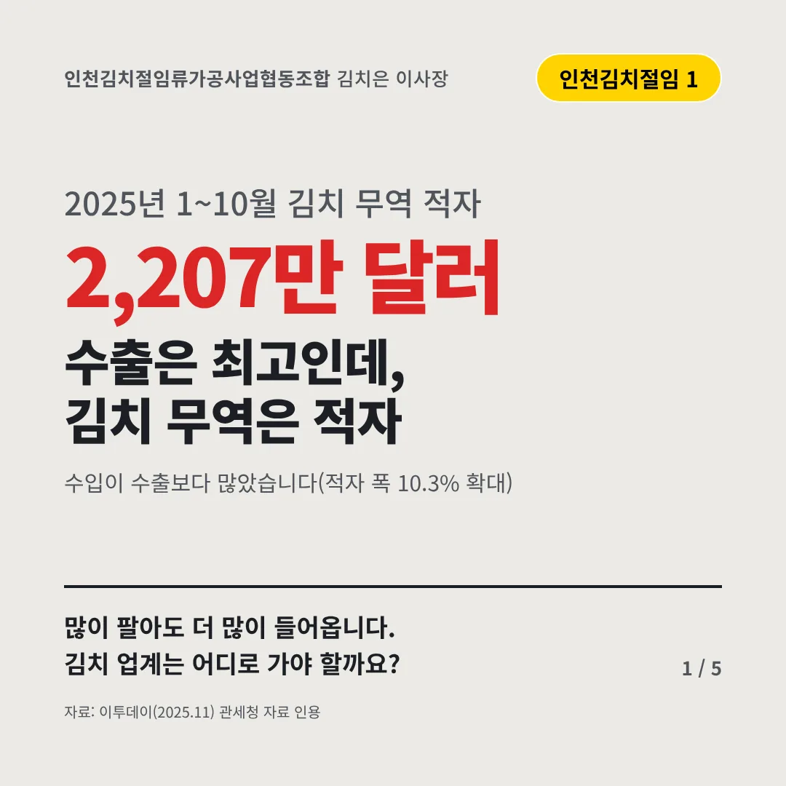
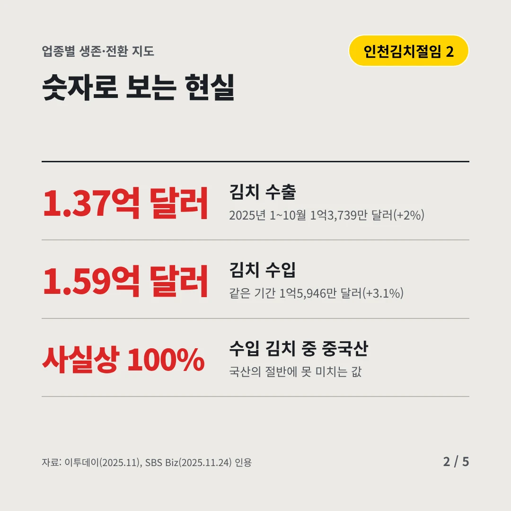
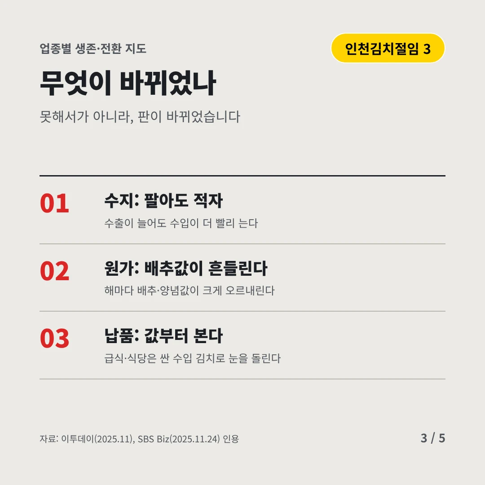
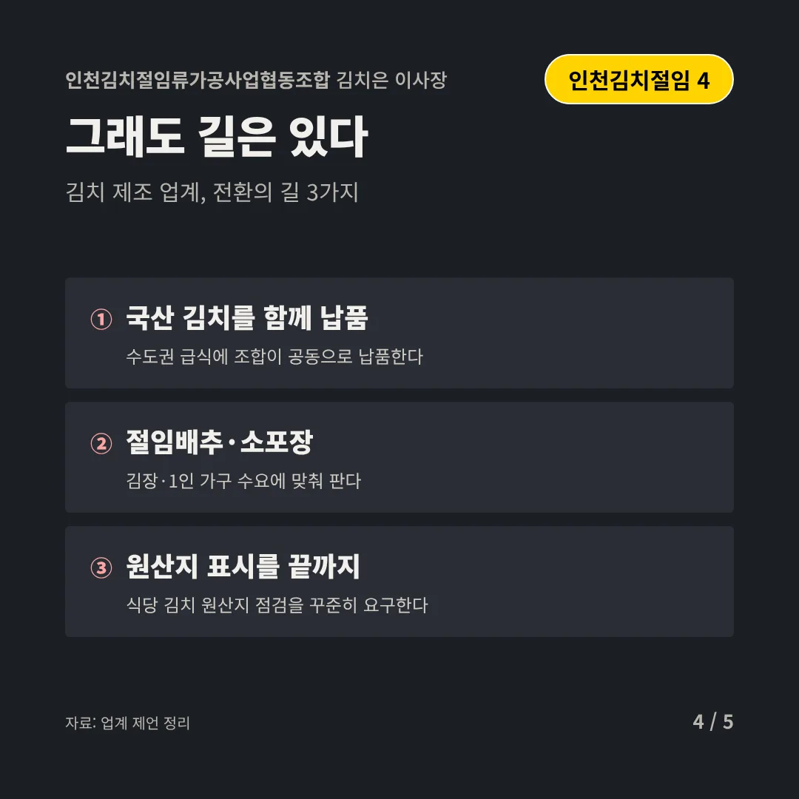
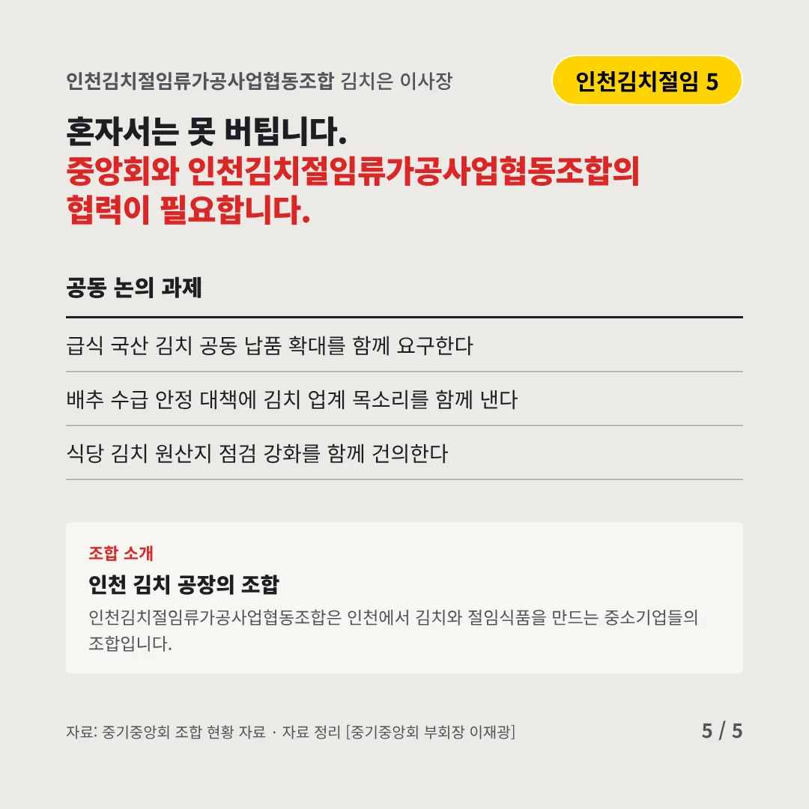
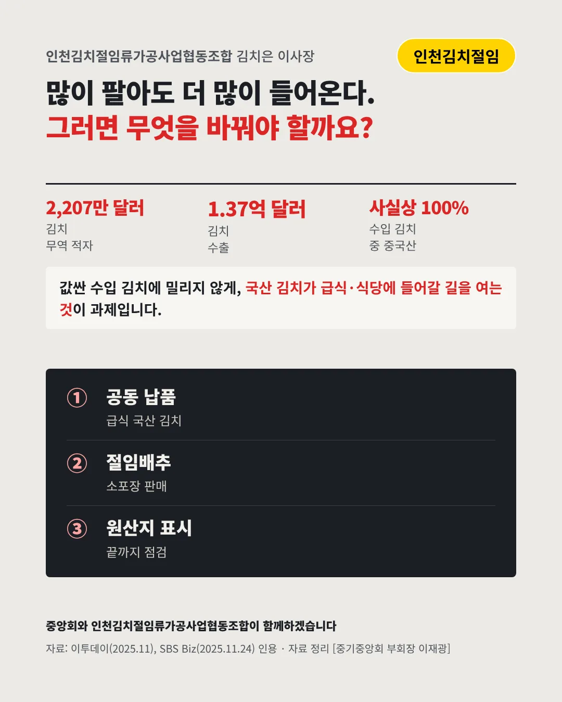

인천김치절임류가공사업협동조합
수출은 최고인데, 김치 무역은 적자
2,207만 달러 2025년 1~10월 김치 무역 적자






많이 팔아도 더 많이 들어옵니다. 김치 업계는 어디로 가야 할까요?
숫자로 보는 현실
- 1.37억 달러김치 수출2025년 1~10월 1억3,739만 달러(+2%)
- 1.59억 달러김치 수입같은 기간 1억5,946만 달러(+3.1%)
- 사실상 100%수입 김치 중 중국산국산의 절반에 못 미치는 값
무엇이 바뀌었나
- 수지: 팔아도 적자수출이 늘어도 수입이 더 빨리 는다
- 원가: 배추값이 흔들린다해마다 배추·양념값이 크게 오르내린다
- 납품: 값부터 본다급식·식당은 싼 수입 김치로 눈을 돌린다
그래도 길은 있다
- 국산 김치를 함께 납품수도권 급식에 조합이 공동으로 납품한다
- 절임배추·소포장김장·1인 가구 수요에 맞춰 판다
- 원산지 표시를 끝까지식당 김치 원산지 점검을 꾸준히 요구한다
한 장 요약

조합 소개
인천김치절임류가공사업협동조합은 인천에서 김치와 절임식품을 만드는 중소기업들의 조합입니다.
자료: 이투데이(2025.11), SBS Biz(2025.11.24)